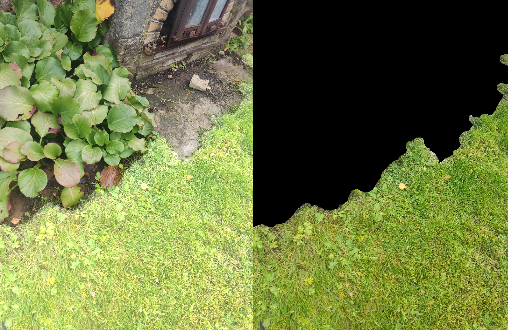

Mina uurin masinõpet. Ma teinud hobiprojektidena masinõppe mudelite treenimist.
Ma olen põhiliselt tegelenud masinnägemisega, aga olen ka huvitatud keele mudelitest.
Masinõppe õppimist alustada saab kõige paremini keele mudelilt küsides ja ise tehes.
Niivisi, kui endal huvi on, saab kergesti teadmisi ja kogemusi masinõppe kohta.
Mina alguses mõtlesin, et tahaks ühes mängus automatiseerida suvaliselt paigutatud tähtede kogumist.
Ma tahtsin seda teha programmiga, mis saab lihtsalt ekraani pilti vaadates tuvastada, kus on need tähed
ja siis wasd nuppe vajutades nendeni liikuda.
Selle jaoks tegin mudeli, mis võtab sisse väikse pildi ja ennustab seal sees ühe tähe asukohta.
Selle jaoks kogusin ise treenimis andmeid ning treenisin mudeli, mis suutis tuvastada neid hea täpsusega.
Selle projektiga päriselt automatiseerimise juurde ei jõudnud, kuna poole peal läks
huvi mängult üle mudeli täpsemaks tegemisele. Selle projektiga õppisin süvaõppe kohta palju.
Ma olen lähiajal tegelenud teadusartikklite järgi tegemisega
(minu esimene enamvähem valmis projekt (taustal on jupp selle koodist))
Näite video sellest projektist.
Vasakul on ennustus ja paremal on kuhu mudel n.ö vaatab.
Millega ma veel tegelenud olen
Teksti tuvastus
Teine minu esimestest projektidest oli teksti tuvastus. Selleks ma tegin mudeli, mis võtab sisse pildi ja ennustab seal esimest nelja sümbolit. Selle mudeli treenimisandmeteks ma tegin kuvatõmmiseid, kus ma märkisin ära teksti, ja genereerisin näiteid koodiga. Peale treenimist saab anda mudelile sisse järjest nihutatud pilte, et saada juppe tekstist ja siis saab need jupid kokku panna.
Lõpuks see mudel suutis esimest kahte sümbolit ennustada õigesti 98% kordardes ning kolmandat ja neljandat 80% ja 50% kordadest.
Selle projektiga ma õppisin palju näidete genereerimise kohta.
Niidetava muru tuvastus
Ma mõtlesin, et võiks teha mudeli, mis suudab pildil märkida, kus on niidetav muru ja kus ei ole. Selle treenimis andmeteks ma kogusin enda aiast pilte ja märgistasin ära niidetava muru.

Näide treenimis punktist, kus on pilt ja pildil märgitud muru
Minu kogutud treenimis andmestik on küll väike ja ma ei ole saanud sellega head mudelit treenida. Paremaid tulemusi saaksin võibolla nii, kui ma eel-treenin mingi suure avaliku andmestikuga ja siis kasutan enda anmestiku lõplikuks treenimiseks.
Olen uurinud teksti mudelite kohta
Teksti mudelitest rääkides olen uurinud github.com/KellerJordan/modded-nanogpt repot.
See on huvitav, kuna seal on palju võtteid, millega on keele mudelite treenimist kiiremaks tehtud.
Kunagi proovisin ka ise implementeerida transformeri mudelit ja seda treenida enda arvuti peal. Aga kuna mu enda arvutil ei ole suurt arvutusvõimsust ja minu implementatsioon oli üpris aeglane, siis läks mitu päeva, et ühe katsetuse jaoks mudelit treenida.